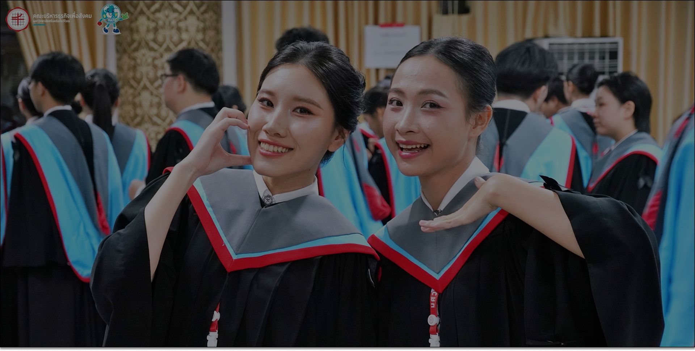
คณะบริหารธุรกิจเพื่อสังคม มหาวิทยาลัยศรีนครินทรวิโรฒ
องค์กรชั้นนำแห่งการเรียนรู้ด้านบริหารธุรกิจเพื่อความยั่งยืนของสังคม
BAS TCAS70 Admissions 2027เปิดรับสมัครนิสิตใหม่ ปีการศึกษา 2570
| Trackรูปแบบ | TCAS1.2Portfolio | TCAS2Quota | TCAS3Admission | Totalรวม | THB / termบาท / ภาค |
|---|---|---|---|---|---|
| Accountancyการบัญชีอาชีพ: ผู้สอบบัญชี, นักวิเคราะห์การเงิน | |||||
| Regularภาคปกติ | Not open · ไม่เปิดรับ | 43 | 47 | 90 | 20,000 |
| Specialโครงการพิเศษ | Not open · ไม่เปิดรับ | 20 | 25 | 45 | 30,000 |
| Marketingการตลาดอาชีพ: ผู้จัดการฝ่ายการตลาด, นักกลยุทธ์แบรนด์ | |||||
| Regularภาคปกติ | Not open · ไม่เปิดรับ | 45 | 45 | 90 | 20,000 |
| Specialโครงการพิเศษ | Not open · ไม่เปิดรับ | 20 | 25 | 45 | 30,000 |
| Financeการเงินอาชีพ: นักวิเคราะห์การลงทุน, ผู้จัดการฝ่ายการเงิน | |||||
| Regularภาคปกติ | 60 | Not open · ไม่เปิดรับ | 30 | 90 | 20,000 |
| Specialโครงการพิเศษ | 30 | Not open · ไม่เปิดรับ | 15 | 45 | 30,000 |
| Hospitality Managementการจัดการธุรกิจบริการอาชีพ: พนักงานบริษัทจัดนำเที่ยว, พนักงานต้อนรับบนเครื่องบินหรือพนักงานบริการภาคพื้นดิน | |||||
| Tourism · Regularท่องเที่ยว ภาคปกติ | 55 | 15 | 20 | 90 | 20,000 |
| Tourism · Specialท่องเที่ยว โครงการพิเศษ | 30 | 5 | 10 | 45 | 30,000 |
| Hotel · Regularโรงแรม ภาคปกติ | 55 | 15 | 20 | 90 | 20,000 |
| Hotel · Specialโรงแรม โครงการพิเศษ | 30 | 5 | 10 | 45 | 30,000 |
| International Businessธุรกิจระหว่างประเทศอาชีพ: เจ้าหน้าที่การค้าระหว่างประเทศ, ผู้จัดการฝ่ายปฏิบัติการโลก | |||||
| Regularภาคปกติ | Not open · ไม่เปิดรับ | 15 | 75 | 90 | 20,000 |
| Specialโครงการพิเศษ | Not open · ไม่เปิดรับ | 15 | 30 | 45 | 30,000 |
| Social Enterpriseธุรกิจเพื่อสังคมและความยั่งยืนอาชีพ: ผู้ประกอบการเพื่อสังคม, นักวิเคราะห์การลงทุนเพื่อสังคม | |||||
| Regularภาคปกติ | 40 | 15 | 35 | 90 | 20,000 |
| Specialโครงการพิเศษ | 20 | Not open · ไม่เปิดรับ | 25 | 45 | 30,000 |
| Global Business Management (International Program)การจัดการธุรกิจโลก (หลักสูตรนานาชาติ)อาชีพ: งานปฏิบัติการระดับโลก, ที่ปรึกษาธุรกิจระหว่างประเทศ | |||||
| Internationalนานาชาติ | 20 | 20 | 5 | 45 | 60,000 |
| All seatsรวมทั้งคณะ | 340 | 233 | 417 | 990 | |
– หมายถึงไม่เปิดรับในรอบนั้น กำหนดการแต่ละรอบรอประกาศ ภาพประกาศนับ 8 สาขาเพราะแยกธุรกิจท่องเที่ยวและธุรกิจโรงแรม ซึ่งเป็นวิชาเอกของการจัดการธุรกิจบริการ
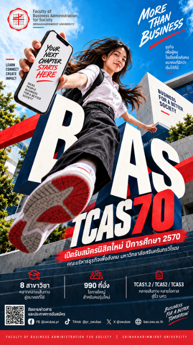
(เปิดภาพขนาดเต็มในแท็บใหม่)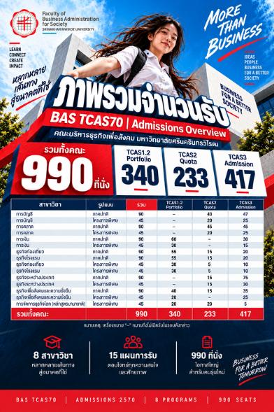
(เปิดภาพขนาดเต็มในแท็บใหม่)Faculty Identityอัตลักษณ์คณะ
กรอบแนวคิดสามด้านที่กำหนดวิธีการเรียนการสอน การทำงาน และการวัดความสำเร็จของคณะ
- Business Excellenceความเป็นเลิศทางธุรกิจ
- Accountabilityความรับผิดชอบ
- Social Engagementการมีส่วนร่วมทางสังคม
Find the Right Path for Youค้นหาเส้นทางการศึกษาที่เหมาะกับคุณ
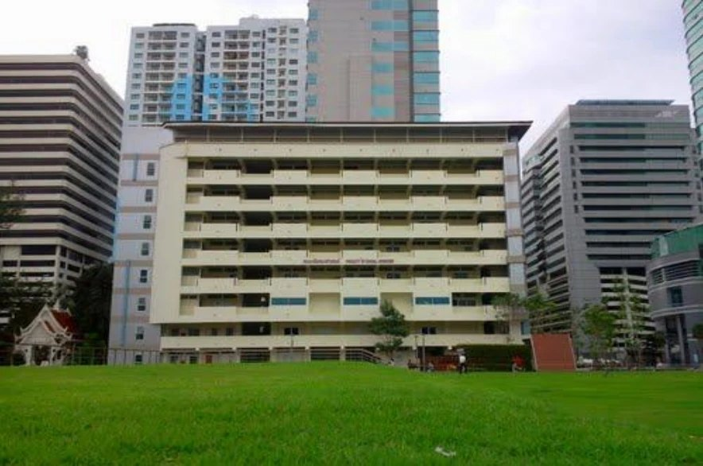
Get to Know Usรู้จักคณะบริหารธุรกิจเพื่อสังคม
Faculty of Business Administration for Society
การศึกษาด้านบริหารธุรกิจที่วัดความสำเร็จจากผลกระทบต่อสังคม ไม่ใช่แค่ตัวเลขในงบการเงิน
คณะอิสระของ มศว ครอบคลุมการบัญชีและการเงิน · การตลาดและการจัดการ · บริหารธุรกิจ — นำโดยคณบดี ดร.ณัฐินี ฐานะจาโร
อ่านเพิ่มเติมเกี่ยวกับ BAS SWU- 3,776Total studentsนิสิตทั้งหมด
- 3,420Bachelor's degreeปริญญาตรี
- 339Master's degreeปริญญาโท
- 17Doctoralปริญญาเอก
- 38Faculty membersอาจารย์ประจำ
- 9Degree programmesหลักสูตร
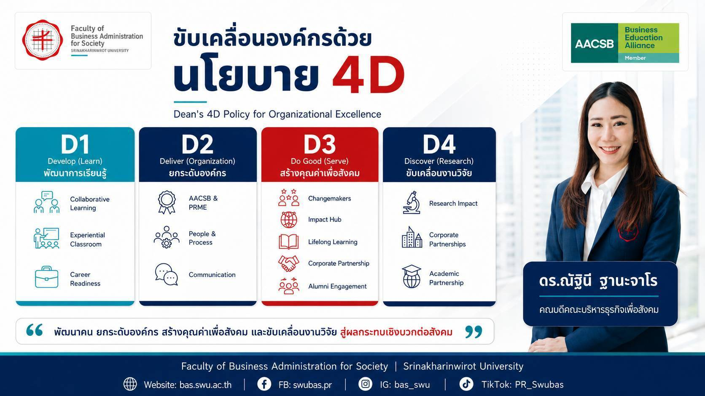
News & Eventsข่าวและกิจกรรม
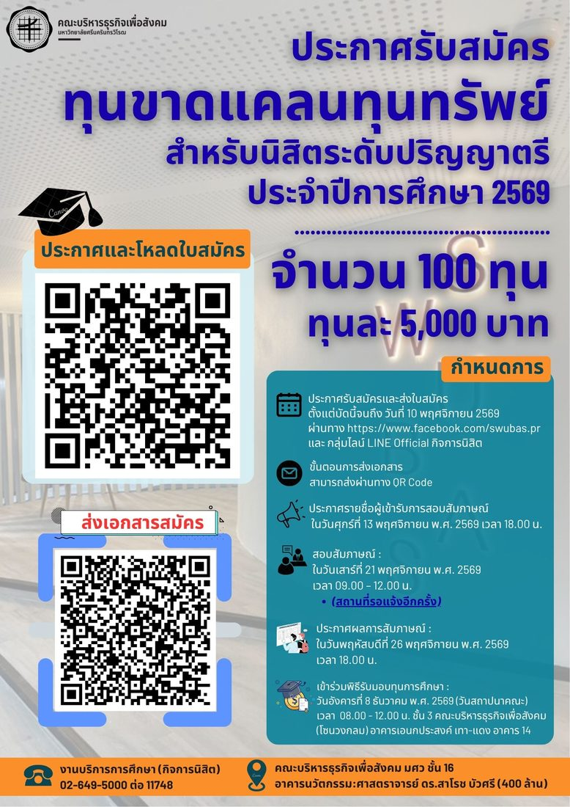
Applications open for the need-based scholarship, academic year 2026ประกาศรับสมัครนิสิตขอรับทุนการศึกษา ประเภททุนขาดแคลนทุนทรัพย์ ประจำปีการศึกษา 2569
นิสิตปริญญาตรี ชั้นปีที่ 2–4 · 100 ทุน ทุนละ 5,000 บาท · เปิดรับสมัครถึง 10 พฤศจิกายน 2569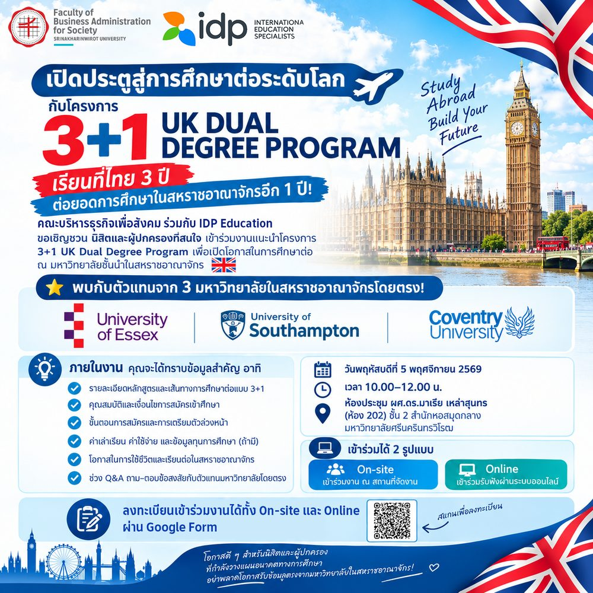
Open the door to world-class study: the 3+1 UK Dual Degree Programme!เปิดประตูสู่การศึกษาต่อระดับโลกกับ 3+1 UK Dual Degree Program!
เรียนที่ไทย 3 ปี ต่อยอดที่สหราชอาณาจักร 1 ปี · งานแนะนำโครงการร่วมกับ IDP Education พบตัวแทน University of Essex, Southampton และ Coventry · 5 พฤศจิกายน 2569 เวลา 10.00–12.00 น. (On-site / Online)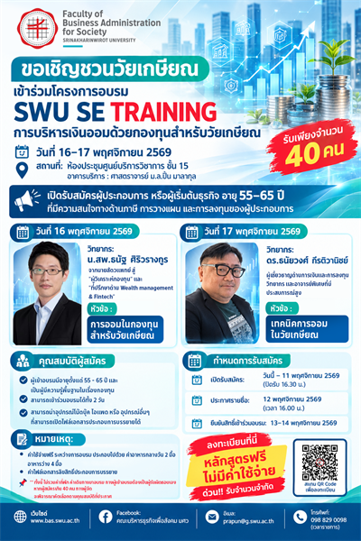
Registration open: Managing retirement savings through funds (training course)เปิดรับสมัครอบรม! การบริหารเงินออมด้วยกองทุนสำหรับวัยเกษียณ
16–17 พฤศจิกายน 2569 · 09.00–16.00 น. ณ ห้องประชุมศูนย์บริการวิชาการ ชั้น 15 อาคารบริการ ศาสตราจารย์ ม.ล.ปิ่น มาลากุล มศว ประสานมิตร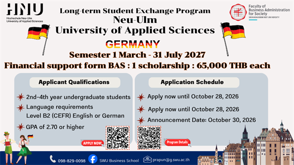
Applications open: long-term student exchange in Germany!เปิดรับสมัครนิสิตแลกเปลี่ยนระยะยาว ณ ประเทศเยอรมนี!
Long-term Student Exchange Program ที่ Neu-Ulm University of Applied Sciences (HNU) 1 มี.ค. – 31 ก.ค. 2570 · ทุน BAS SWU 1 ทุน มูลค่า 65,000 บาท · สมัครถึง 28 ตุลาคม 2569Learn Japanese language and culture at Meiji University, Japan!เปิดโอกาสเรียนรู้ภาษาและวัฒนธรรมญี่ปุ่น ณ Meiji University ประเทศญี่ปุ่น!
Short-term Japanese Language Program Winter 2027 สำหรับนิสิตชั้นปีที่ 2–3 · 1–20 กุมภาพันธ์ 2570 · สมัครถึง 5 พฤศจิกายน 2569ยังไม่มีข่าวในหมวดนี้ · ดูข่าวทั้งหมด
Stay Connectedติดตามจดหมายข่าว
ไม่พลาดทุกข่าวสารสำคัญ กิจกรรมเด่น และเรื่องราวความสำเร็จของชาวคณะฯ ที่รวบรวมไว้ให้คุณในรูปแบบจดหมายข่าวอิเล็กทรอนิกส์
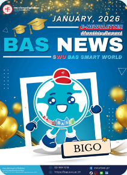
BAS NEWS Monthly Report, January 2026BAS NEWS Monthly Report ฉบับเดือนมกราคม 2026
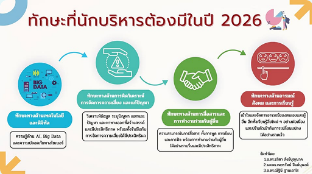
Skills every manager needs in 2026ทักษะที่นักบริหารต้องมีในปี 2026
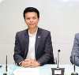
Academic cooperation MOU signing, Matichon Onlineพิธีลงนามบันทึกข้อตกลงความร่วมมือทางวิชาการ MOU มติชน ออนไลน์
Follow Us on Facebookติดตามข่าวสารผ่าน Facebook คณะ
อัปเดตข่าวประชาสัมพันธ์ กิจกรรม ทุนการศึกษา และเรื่องราวของชาว BAS ก่อนใคร ส่งตรงจากเพจทางการของคณะ
SWU Business Schoolfacebook.com/swubas.pr (เปิดในแท็บใหม่) Follow page · กดติดตามเพจ (เปิดในแท็บใหม่)ช่องทางอื่นของคณะ
Integrity & Transparency Assessment (ITA)การส่งเสริมคุณธรรมและความโปร่งใส (ITA)
ส่งเสริมค่านิยมความซื่อสัตย์และจิตสำนึกรับผิดชอบ เพื่อสร้างสังคมอุดมปัญญาที่ปราศจากการทุจริต และขับเคลื่อนคณะฯ ไปข้างหน้าอย่างสง่างาม
Student Services & Resourcesบริการและข้อมูลสำหรับนิสิต
ช่องทางบริการที่ใช้บ่อย รวมไว้ในที่เดียว ตั้งแต่คู่มือ แบบประเมิน ไปจนถึงการสนับสนุนการศึกษา
-
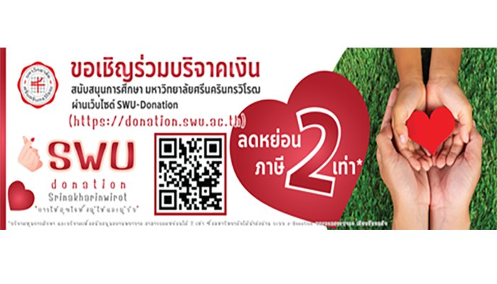
Donate to support educationขอเชิญร่วมบริจาคเงินสนับสนุนการศึกษา
บริจาคผ่าน SWU Donation เพื่อสนับสนุนการศึกษาของนิสิต ใช้ลดหย่อนภาษีได้ 2 เท่า (เปิดในแท็บใหม่) -
Student, work and service manualsคู่มือสำหรับนิสิต คู่มือปฏิบัติงาน/การให้บริการ
รวมคู่มือสำหรับนิสิต และคู่มือปฏิบัติงานและการให้บริการของคณะ (เปิดในแท็บใหม่) -
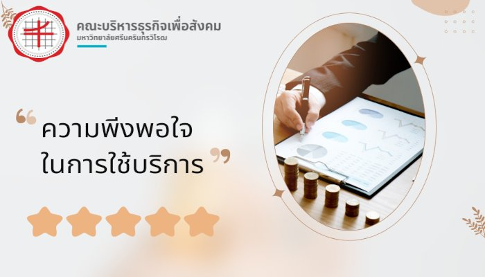
Service satisfactionความพึงพอใจในการใช้บริการ
ประเมินความพึงพอใจต่อบริการของคณะ ความเห็นของคุณช่วยให้เราปรับปรุงบริการได้ดีขึ้น (เปิดในแท็บใหม่) -
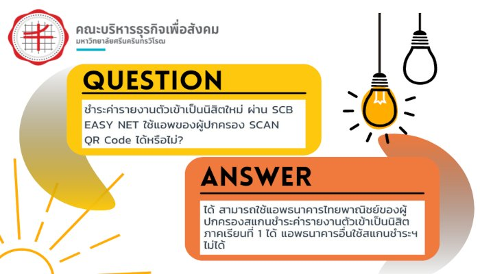
Frequently asked questionsคำถามที่พบบ่อย
คำตอบสำหรับคำถามที่นิสิตและผู้สมัครถามบ่อย เช่น การสมัครและการชำระค่าธรรมเนียม -
Complaint procedureขั้นตอนจัดการเรื่องร้องเรียน
ส่งข้อเสนอแนะหรือข้อร้องเรียน พร้อมขั้นตอนการรับและจัดการเรื่องร้องเรียนของคณะ
Partnership Networkเครือข่ายพันธมิตร
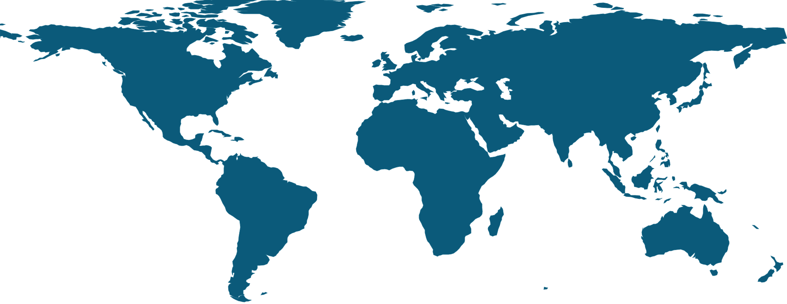
- 24Organisationsองค์กร
- 3Countriesประเทศ
- 1Region: Asiaภูมิภาค: เอเชีย
Asia
Thailand
22 องค์กรKing Mongkut's Institute of Technology Ladkrabang
Education
Faculty of Social Sciences, Srinakharinwirot University
Education
Rajinibon School
Education
Sarasas Witaed Nakhon Pathom School
Education